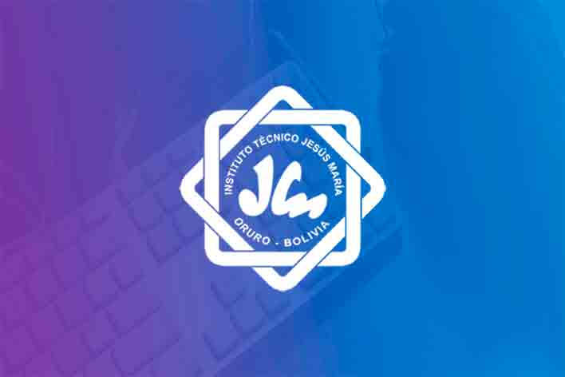

Desde el año 2020, el Instituto Técnico Jesús María implementó su Plataforma Virtual Institucional como parte de su estrategia educativa semipresencial, ofreciendo herramientas modernas y accesibles para sus estudiantes.
nombre.apellido@intjem.edu.bojm.[número de Cédula de Identidad]Desde nuestra plataforma, los estudiantes pueden acceder a sus materias, tareas y recursos educativos de manera fácil y rápida.
Ir a la Plataforma 